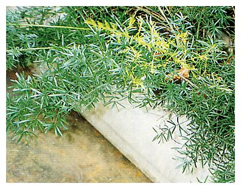
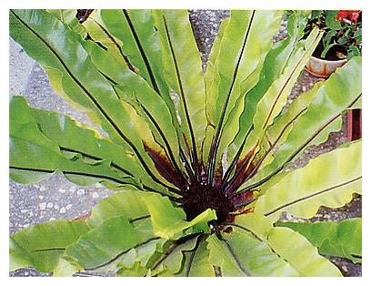
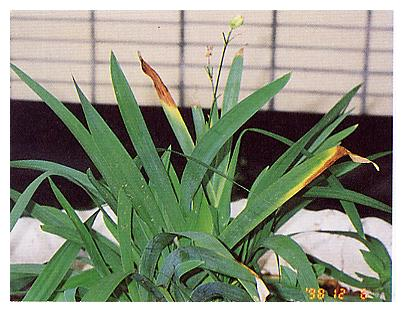
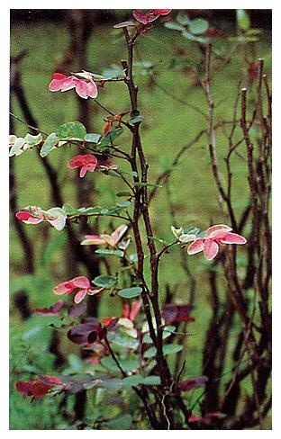
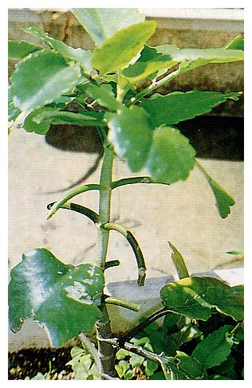
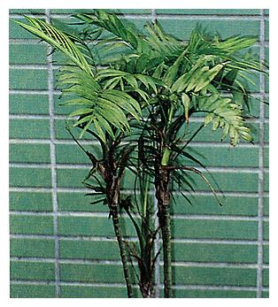
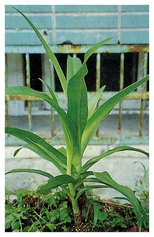
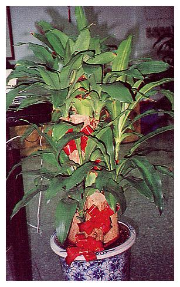
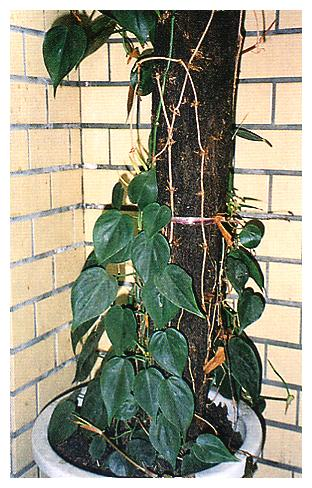

| 編號 | 照片 | 名稱 | |
| 01 |  |
俗名 | 紫絹莧 |
| 學名 | Aerve songuinolentacv. 'Songuinea' | ||
| 科名 | 莧草科 Amaranthaceae | ||
| 介紹 | 多年生草本，植株低矮，高約5～15公分，莖伸長後呈半匍匐性或半蔓性，葉對生，橢圓狀長卵形，先端尖葉色紫紅或紫褐。此類植物生性強健，耐旱，生長密集，性喜日照充足。 繁殖可用分株法或扦插，春至秋季均能育苗，剪取頂芽或未老枝條，每段約12～15cm，扦插於沙土中，日照約60％，保持濕度約二週即能發根成苗，栽種地方土壤應排水良好，日照充足。 | ||
| 編號 | 照片 | 名稱 | |
| 02 |  |
俗名 | 銀王粗肋草 |
| 學名 | Aglaonema cv. Silver King' | ||
| 科名 | 天南星科 Araceae | ||
| 介紹 | 多年生草本，株高約30～50cm，四季常綠，莖直立不分枝，葉片長卵形，厚革質，葉色暗綠，葉面光滑散生灰色、乳白色、黃綠色之斑紋，葉柄基部鞘狀，中肋兩邊常不等大。 肉穗花序數個聚生，佛燄苞淡綠黃綠或黃色，結果時便脫落。單性花雌花在花序下部，雄花在上部，雄蕊明顯，均無花被，橢圓形之漿果成熟時為橘或紅色，種子一粒。 粗肋草耐蔭，以分株法或播種繁殖，全株有毒，人畜誤食莖葉會造成口舌發炎、胃痛、腹瀉等症狀。 | ||
| 編號 | 照片 | 名稱 | |
| 03 |  |
俗名 | 粗肋草 |
| 學名 | Aglaonema modestum. | ||
| 科名 | 天南星科 Araceae | ||
| 介紹 | 多年生草本植物，葉直立不分枝，葉長橢圓形，葉柄基部鞘狀，中肋兩邊不等大，厚革質或紙質，葉色黃綠；肉穗花序數個聚生，佛燄苞淡綠，黃綠或黃色，節果時脫落。單性花，雌花在花序下部，雄花在上部，無花被；果實為橢圓形之漿果。粗肋草原生種有五十餘，另有許多雜交種如常見之銀王銀后粗肋草，狹葉粗肋草等，品系不少。粗肋草全株有毒，人畜誤食其莖葉會口舌發炎、胃痛、腹瀉。 | ||
| 編號 | 照片 | 名稱 | |
| 04 | 俗名 | 斑葉鳳梨 | |
| 學名 | Ananas comosus‘Variegatus’ | ||
| 科名 | 鳳梨科 Bromeliaceae | ||
| 介紹 | 多年生草本，葉基生劍形，達60cm長，鋸齒緣銳利，表面有黃白色斑紋，葉螺旋狀輪生，春夏開花，花軸自葉叢中抽出，穗狀花序由多數小花所組成，與食用鳳梨相似。 斑葉鳳梨果實較食用鳳梨小，不甜，不宜食用，主要用作觀賞。 | ||
| 編號 | 照片 | 名稱 | |
| 05 |  |
俗名 | 小葉南洋杉 |
| 學名 | Araucaria heterophylla(Salisb.) Franco | ||
| 科名 | 南洋杉科 Araucariaceae | ||
| 介紹 | 常綠喬木，側枝向各方向近乎水平伸出，每一側枝上對生兩對小枝，近乎水平生長或稍上揚或下垂，小枝上有鑿形小葉螺旋狀著生，側枝輪生每一節上長側枝4～6枝。葉質柔軟，不會刺人。毬果球形，鱗片上先端有鉤刺。樹形優雅且容易生長甚受喜愛，繁殖以種子繁殖，如以側枝、插條繁殖，產生之植株永遠向水平方向生長，不能直立，除供觀賞外，樹幹可做為建材。 | ||
| 編號 | 照片 | 名稱 | |
| 06 |  | 俗名 | 武竹、天門冬 |
| 學名 | Asparagus densiflorusJessop cv. "Sprengen" | ||
| 科名 | 百合科 Liliaceae | ||
| 介紹 | 多年生草本，宿根性觀葉植物，地下有橢圓形根莖，莖半木質化，分枝很多，小枝十字對生，假葉一、二枚至三、四枚，群生，線形扁平，黃綠色有光澤，夏季開花，花色白中帶淡桃色，漿果鮮紅色。 性喜高溫多濕，22°C～28°C為生育適溫，以種子或分株法繁殖。 | ||
| 編號 | 照片 | 名稱 | |
| 07 |  | 俗名 | 台灣山蘇花、山蘇花、鳥巢蕨、雀巢蕨 |
| 學名 | Asplenium nidus L. | ||
| 科名 | 鐵角蕨科 Aspleniaceae | ||
| 介紹 | 大型著生性蕨類，著生樹幹或岩石上。根莖短粗，葉著生其上，向四週生長而呈鳥巢狀故名鳥巢蕨。葉狹長披針形，長可達1公尺，中肋粗大褐色，側脈平行，葉緣略呈波狀。孢子囊群在葉背沿側脈著生，但只在葉片之上半部而已。 根莖粗短著生一大團之氣根附在樹幹上，卷曲之新葉，嫩脆可食，嫩芽搗碎可外敷創傷。 | ||
| 編號 | 照片 | 名稱 | |
| 08 |  |
俗名 | 豔紫荊、洋紫荊 |
| 學名 | Bauhinia blakeana Dunn | ||
| 科名 | 蘇木科 Caesalpiniaceae | ||
| 介紹 | 常綠喬木，枝條開展下垂，葉互生，卵圓形，頂端及尖端自中間凹入，花冠紫紅色，顏色較羊蹄甲花鮮艷，雄蕊5枚繖房花序，子房柄長。莢果長披針形，成熟時由綠轉褐。本種為天然雜交種，花大鮮艷，花期較羊蹄甲為長，十月～次年四月，生長快速，阡插後一年即可開花，多做為行道樹或觀花用。 | ||
| 編號 | 照片 | 名稱 | |
| 09 |  |
俗名 | 羊蹄甲、香港櫻花 |
| 學名 | Bauhinia Variegata L. | ||
| 科名 | 蘇木科 Caesalpiniaceae | ||
| 介紹 | 落葉喬木，葉互生，近圓形，先端有深凹如羊蹄，葉基心形葉面綠色平滑，葉背淡灰綠色，掌狀脈。繖房芯序，花瓣粉紅，花瓣五，倒卵狀橢圓形，綠色條紋明顯，春初開花至五月，先開花後萌發新葉，莢果肩平，以種子繁殖。 | ||
| 編號 | 照片 | 名稱 | |
| 10 |  | 俗名 | 射干、尾蝶花、紅尾蝶花 |
| 學名 | Belamcanda chinensis | ||
| 科名 | 鳶尾科 Iridaceae | ||
| 介紹 | 宿根草本植物，株高30～90cm，具短莖。葉劍形，互生排列，扁平如扇。平行脈，主脈不明顯，全緣。夏秋季開花，花莖細長，上部多分枝，頂端開橙紅色帶鮮紅班點小花，六瓣分離，花色另有黃、桃、紅、乳白等之變種及矮生品種，耐旱、耐高溫。可用分株、阡插或播種繁殖，春秋為適期。 | ||
| 編號 | 照片 | 名稱 | |
| 11 |  | 俗名 | 彩葉山漆莖 |
| 學名 | Acalypha wilkesianaMuell.-Arg. | ||
| 科名 | 大戟科 Euphorbiaceae | ||
| 介紹 | 多年生灌木或喬木，葉為單葉，全緣，互生。雌雄同株，無花瓣，常於葉腋單生或雄花稍呈叢生狀，雄花花萼呈覆瓦狀而有六寬葉片。雄蕊3，花絲合體；子房三室各有二卵，果為核果。 彩葉山漆莖多作為觀葉、觀姿或插花之材料。 | ||
| 編號 | 照片 | 名稱 | |
| 12 |  |
俗名 | 構木、鹿仔樹 |
| 學名 | Broussonetia papyrifera L Herit | ||
| 科名 | 桑科 Moraceae | ||
| 介紹 | 落葉中喬木，自生全省1600公尺以下山野路旁，樹幹短，在低處即分枝，小枝密生短毛，葉互生、葉柄長密生短絨毛，幼葉有2～5個深裂，成熟葉呈心狀卵形，均具鋸齒緣，托葉廣披針形，早落雌雄異株，雄花序葇荑狀，雄蕊4枚，雌花呈頭狀花序，聚合果熟時紅色或橘紅色。構樹之樹皮可製紙漿用來造高級紙，乳汁樹液可加工製成金漆。樹葉為鹿、牛、羊所嗜，養鹿人喜以其小枝及葉飼鹿。木材輕軟，可做板箱或薪炭材。 構木果實稱為「楮實」可為強壯劑，葉可治風濕、疝氣，葉搗成汁外用治皮膚病，根皮可做利尿劑，成熟果實可食用。構木生長迅速，根部亦能萌芽長成植株。 | ||
| 編號 | 照片 | 名稱 | |
| 13 |  | 俗名 | 落地生根、倒吊蓮、倒地蓮、天燈籠 |
| 學名 | Bryophyllum pinnatum(Lam.) Kurz | ||
| 科名 | 景天科 Crassulaceae | ||
| 介紹 | 多年生肉質草本植物，全株無毛；莖直立，高30～100cm，少分岐。葉對生，上層多羽狀葉，下層單葉；小葉橢圓形，齒緣。圓錐花序，花萼圓柱狀，紫綠色，花萼基部球狀八角形，綠白色，露出部分紅紫色；子房下位，雄蕊8，附生於冠基。果實閉合，種子小，長橢形，光滑，春天開花，頂生或腋生。 落地生根之葉落在陰濕之地面，就會在其葉片邊緣缺刻處長出幼苗。根和葉可供藥用，有止血、消炎、止痛、消腫之效。內服時將莖葉洗淨煮湯服用，或以乾淨鮮葉搗汁服用，可調酒，冰糖或蜂蜜，也可不必，可治高血壓，外用則以洗淨之鮮葉搗爛外敷患處，但是患胃腸痛者勿內服。 | ||
| 編號 | 照片 | 名稱 | |
| 14 |  |
俗名 | 金鳳花、黃蝴蝶 |
| 學名 | Caesalpinia pulcherrima(L.) Swartz | ||
| 科名 | 蘇木科 Caesalpiniaceae | ||
| 介紹 | 灌木或小喬木，全體平滑無毛，有時有一些棘刺散生枝上，二回羽狀複葉，6～9對羽片，每一羽片上有橢圓形之小葉10～12對。總狀花序花梗長，花萼五裂花瓣五片，黃色與橙黃或橙紅色間雜，雄蕊花絲紅色細長，花形略似蝴蝶嬌小玲瓏故有黃蝴蝶之稱。莢果扁平長5～6公分，寬約2.5公分，種子6～8枚，播種繁殖一、二年即可開花。 | ||
| 編號 | 照片 | 名稱 | |
| 15 | 俗名 | 紅豔彩葉芋 | |
| 學名 | Caladium hortulanum' Postman Joyner' | ||
| 科名 | 天南星科 Araceae | ||
| 介紹 | 多年生草本，株高約20～40公分，葉盾狀長心形或長卵形，自地下塊莖直立簇生。成株開花，佛燄苞花序，秋天即進入休眠期，葉片凋萎，僅存地下塊莖，次年春暖(四月)以後再萌新葉。 性喜高溫多濕，忌強光直射，忌乾燥及排水不良，繁殖可用分株法或分球法。 | ||
| 編號 | 照片 | 名稱 | |
| 16 |  |
俗名 | 山茶 |
| 學名 | Camellia japonica Linn. | ||
| 科名 | 山茶科 Theaceae | ||
| 介紹 | 常綠灌木或小喬木，葉互生，葉形多樣有橢圓，長橢圓或卵形，鋸齒緣，先端尖，葉色綠，革質富光澤。花頂生或腋生，花色有深紅、粉紅、白、白中帶紅綠等，花形亦多變化，有重瓣也有單瓣，花期自11月至翌年4月。果為蒴果，種子大型，每一果實中有1～3粒種子，種子可榨油供食用，繁殖以阡插、嫁接或壓條為主，喜冷涼半蔭，排水良好且富有機質的土壤，生長緩慢。山茶花是新竹縣之縣花。 | ||
| 編號 | 照片 | 名稱 | |
| 17 |  |
俗名 | 食用美人蕉、蓮蕉花、曇華、蓮蕉 |
| 學名 | Canna edulis Ker-Gawl | ||
| 科名 | 美人蕉科 Cannaceae | ||
| 介紹 | 多年生草本植物，莖綠色，上有臘質白粉，叢生，地下莖肥厚，匍匐延伸生長。單葉互生，葉柄鞘狀抱莖，葉卵狀橢圓形，基部楔形或圓形，先端尖，全緣，中肋明顯，側出平行脈。 總狀花序頂生，有一大形苞鞘，苞片長橢圓形至圓形，萼片3枚，小形，綠色，形似苞片，花瓣3枚，綠色，狀似萼片，雄蕊扁平化形成花瓣狀，為花最顯著的部分，紅色或橙紅色，雄蕊5枚，其中3枚假雄蕊最大，為主瓣，一枚假雌蕊較小為唇瓣，另 一枚小形上面著生花藥為孕性雄蕊。蒴果卵狀長圓形，種子球形成熟時黑色。 地下莖富含澱粉，可食用，繁殖以分株法較普遍，亦可種子繁殖，花期5～11月。地下莖、花、葉均可藥用，含醣類及粘液質，具安神降壓，清熱利濕，利尿解毒之功效，主治黃膽肝炎、高血壓、咽喉炎、神經炎、火燙傷、疔瘡、白帶、血崩等，外用可治療瘡瘍腫毒。 | ||
| 編號 | 照片 | 名稱 | |
| 18 |  |
俗名 | 阿勃勒 |
| 學名 | Cassia fistula L. | ||
| 科名 | 蘇木科 Caesalpiniaceae | ||
| 介紹 | 落葉中喬木，一回羽狀複葉，小葉大，對生，夏初長新葉，吐新花芽，花序腋生，成串垂懸。花色鮮黃明艷幽雅，有的先開花後長葉，有時花葉同時長出。莢果長條狀熟時黑褐色。 原產於印度。 | ||
| 編號 | 照片 | 名稱 | |
| 19 |  | 俗名 | 袖珍椰子 |
| 學名 | Chamaedorea elegans mart. | ||
| 科名 | 棕櫚科 Palmae | ||
| 介紹 | 多年生單幹或叢生，株高最高約2公尺，莖幹最粗的只有3公分，葉片羽狀或雙葉狀。雌雄異株，開黃色花，果實白色小粒。耐陰性強，耐旱，但若長期擺在室內，會影響生長，應每星期有一天的上午晒日光，晒前充分澆水。以種子繁殖，生長期間要漸次換盆，由小而漸至大盆，換盆移植以初夏，氣溫開始上升時為佳。 | ||
| 編號 | 照片 | 名稱 | |
| 20 |  |
俗名 | 吊蘭、掛蘭（本照片是中斑吊蘭） |
| 學名 | Chlorphytum comosum | ||
| 科名 | 百合科 Liliaceae | ||
| 介紹 | 多年生草本，葉從根長出呈線形，長約20至30公分，寬約1至2公分，因品種而異，在綠色長葉上有白色條紋。成株易生匍匐莖（走莖）先端著生幼苗，開花期間的吊蘭會在走莖上長出小白花。 吊蘭耐陰性強，室內室外均生長良好，但忌夏天中午的直射強光，日照50～70﹪生育最好。栽植土壤以沙壤土或腐植質壤土為佳，性喜高溫多濕，繁殖可用分株法或剪取走莖上之幼苗栽植，全年均可育苗。 | ||
| 編號 | 照片 | 名稱 | |
| 21 |  |
俗名 | 美人樹 |
| 學名 | Chorisia speciosa St. Flil | ||
| 科名 | 木棉科 Bombaceae | ||
| 介紹 | 落葉喬木，莖葉同為綠色，葉互生掌狀複葉，小葉5～7枚，莖上長瘤狀刺，花色淡紫紅，花瓣五片，主幹下部稍膨大。 | ||
| 編號 | 照片 | 名稱 | |
| 22 | 俗名 | 黃椰子 | |
| 學名 | Chrysalidocarpus lutescensH. Wendl. | ||
| 科名 | 棕櫚科 Palmae | ||
| 介紹 | 多年生常綠半木本，叢生多幹，幹圓柱狀不分枝，環節明顯，高可達9m，羽狀複葉呈綠色或淡黃色叢生於莖頂，長橢圓形，長約2m；小葉40～60對，線形，長約40cm，寬約2.5cm，全緣，先端常兩裂，葉柄及葉鞘黃色，葉鞘筒狀，長約30cm。雌雄同株，花序圓錐狀肉穗花序，單性花，花軸著生於葉間，分枝多，漿果黃綠色橢圓形，具有怡人芳香，成熟時黑紫色。 | ||
| 編號 | 照片 | 名稱 | |
| 23 | 俗名 | 菊花、池菊、菊仔、日精 | |
| 學名 | Chrysanthemum morifoliumRamat. var sinense Mak. | ||
| 科名 | 菊科 Compositae | ||
| 介紹 | 多年生草本，莖直立，基部有木質化現象。葉互生，厚紙質，葉柄長，卵形至披針形，有粗大缺刻和鋸齒。葉基心形，葉背灰綠色，莖葉均有香氣。秋天開花，頭狀花生於莖頂，外層為舌狀花，管狀花在內層，苞片在最外層，綠色，條形，邊緣膜質。整個頭狀花之大小，顏色及小花數量，形狀，長短等均極富變化，每一小花雄蕊5枚，雌蕊一枚，柱頭三裂，瘦果。菊花是彰化縣之縣花。 花序及全草具疏肝平肺，明目清上焦邪熱，益陰滋腎，消炎解毒的功用，主治感冒發熱，咽喉發炎腫疼，頭眩目暗，耳鳴難睡，膀胱炎，尿道炎，陰道炎，高血壓等，菊花花序晒乾可做菊花茶。 現在本省已可使菊花在全年開花，方法是調節菊花之光照時間。 | ||
| 編號 | 照片 | 名稱 | |
| 24 |  |
俗名 | 朱焦，紅竹，朱竹，千年木，千年蕉 |
| 學名 | Cordyline ssp | ||
| 科名 | 龍舌蘭科 Agavaceae | ||
| 介紹 | 常綠喬木或灌木，莖單一或分歧，細長。葉具長柄，葉披針形或長橢圓形狀披針形，先端銳尖，全緣，革質或剛硬，葉集生於幹端，表面紅色或具各種有色斑紋，中肋明顯。圓錐花序，花帶白、黃或綠色、紅紫色，腋生，花瓣六枚。喜高溫多濕。漿果球形，熟時紅色。 供觀賞外葉可作藥，主治癆傷吐血、咳嗽、皮下出血。 | ||
| 編號 | 照片 | 名稱 | |
| 25 |  | 俗名 | 文珠蘭、文殊蘭、海蕉 |
| 學名 | Crinum asiatcum L. | ||
| 科名 | 石蒜科 Amaryllidaceae | ||
| 介紹 | 多年生草本，地下莖球狀，地上莖短圓柱形，近地面處側生分株，株高約50～100cm。葉劍形，基部抱莖，螺旋狀著生，聚生莖端，葉肉厚多汁，先端漸尖，全緣，中肋明顯。夏季開花，花莖直立，繖形花序，小花成簇，頂生，花冠白色，裂片6枚。雄蕊6枚，花絲細長，子房下位，蒴果近球形，種子大形，外種皮海棉質。文珠蘭生性強健耐風耐潮，性喜明亮的間接日照，忌強光直射，排水力求良好，以分株法或阡插法在春天至秋天皆可，也可用種子繁殖，文珠蘭全株有毒，尤以鱗莖為最。 文珠蘭具有消腫止痛，行血散瘀消炎之功效，也可治腫毒腫瘡，跌打損傷骨折，關節炎等。 | ||
| 編號 | 照片 | 名稱 | |
| 26 | 俗名 | 輪傘莎草、輪傘草、傘草 | |
| 學名 | Cyperus alternifolisssp. flabelliformis | ||
| 科名 | 莎草科 Cyperaceae | ||
| 介紹 | 多年生草本，莖叢生而出，高40～80公分，頂端互生而成輪軸狀的總苞葉，約15～20枚如傘之骨架，花由總苞葉間開出，初呈綠色穗狀，開花後呈紅褐色，種子細小。 性喜日光，生長適溫20～25℃，可耐低溫至5℃，喜潮濕。可將莖頂3～5公分切下將總苞葉剪短至1/3處，插入沙中，保持沙土濕潤即可發芽長根。 | ||
| 編號 | 照片 | 名稱 | |
| 27 | 俗名 | 番仔林投、狹葉龍血 | |
| 學名 | Dracaena angustifolia | ||
| 科名 | 龍舌蘭科 Agavaceae | ||
| 介紹 | 常綠灌木，株高可達五公尺，成株叢生狀，莖細直，長高後易彎斜，葉線形，全緣，無柄，基部作鞘狀，呈旋疊式簇生，劍形，先端漸尖，全體呈濃綠色，花密生，圓錐狀排列，漿果橙黃色。番仔林投喜溫暖潮濕環境，生性強健，耐風，耐潮抗旱；可用分株或阡插繁殖。 | ||
| 編號 | 照片 | 名稱 | |
| 28 |  | 俗名 | 黃邊香龍血樹、巴西鐵樹 |
| 學名 | Dracaena fragrans(L.) Kercv. 'Lindenii' | ||
| 科名 | 龍舌蘭科 Agavaceae | ||
| 介紹 | 常綠小喬木狀植物，高可達四公尺，莖幹直立，通常皆單幹，也會有分枝，葉寬線形，長30～40公分，寬5～10公分，葉四方展開，密集於幹頂，邊緣帶波狀金黃色條紋，在陰暗環境下斑色會退化消失，花穗由莖頂抽出，每節密集多數球狀花，有很強之香味，花被六片，基部合一。 繁殖用阡插法，在春夏季剪下帶葉之莖頂剝除下部葉片，阡插於河沙、細蛇木屑或腐植土上，保持濕潤，半日照，30～40天發根。 | ||
| 編號 | 照片 | 名稱 | |
| 29 |  |
俗名 | 紅邊竹蕉 |
| 學名 | Dracaena marginata | ||
| 科名 | 龍舌蘭科 Agavaceae | ||
| 介紹 | 常綠灌木，莖幹挺直，葉片細長，新葉向上伸長，老葉垂懸，葉面中間綠色，葉緣有紫紅色或鮮紅色條紋，總狀花序花被6片，略帶紫紅色，漿果熟時紅色。 性喜高溫多濕，也耐旱、耐陰、耐強光，冬天要避風，全日照、半日照均能成長，繁殖可用阡插。 | ||
| 編號 | 照片 | 名稱 | |
| 30 |  |
俗名 | 斑葉萬年青、黃金竹蕉、黃金萬年竹 |
| 學名 | Dracaera sanderiana | ||
| 科名 | 龍舌蘭科 Agavaceae | ||
| 介紹 | 多年生草本，灌木狀，莖幹直立，葉披針形、互生，薄革質，葉全緣。葉緣有乳白鑲邊或黃金色縱紋，耐濕耐陰，剪下枝條，將要浸在水中部分之葉片摘除，浸入水中即可發根成活。也可直接插入花盆土中，置於半陰處，澆水保持濕度也可發根長成新株，性喜高溫多濕，忌強烈日光照射，水栽時水質要保持清潔，忌油煙污染。育苗時間全年均可，以春夏較為理想，剪取枝條每段10～15公分，阡插於沙土或腐植土中，置於半陰處，保持濕度約三週即長根。也可剪取成株之頂梢，直接插入盛好細蛇木屑或沙土之盆中，置於半陰處，澆水保持濕度，約三週即可發根成新株。 | ||
| 編號 | 照片 | 名稱 | |
| 31 | 俗名 | 萬年青、萬年竹、綠葉竹蕉 | |
| 學名 | Dracaena sanderiana cv.'Virens' | ||
| 科名 | 龍舌蘭科 Agavaceae | ||
| 介紹 | 多年生常綠灌木狀，莖幹直立，葉披針形，互生，薄革質，葉全緣，株高可達4m，耐濕耐陰。以分株法或阡插來繁殖，春、夏季進行繁殖較為理想。 | ||
| 編號 | 照片 | 名稱 | |
| 32 |  |
俗名 | 金露花、苦林盤、台灣連翹 |
| 學名 | Duranta repens L. | ||
| 科名 | 馬鞭草科 Verbenaceae | ||
| 介紹 | 常綠灌木，莖多分枝，小枝柔軟下垂，葉對生或輪生，卵形或卵狀橢圓，全緣，長2～6cm，總狀花序頂生，花淡紫色間或有白色，筒狀花，花冠五裂，徑約1公分，核果球形，成熟時橘黃色成串垂掛，夏秋之間 開花結果，一般栽植做為綠籬，繁殖以阡插繁殖。 果實有毒，誤食會腹痛、腹瀉、昏睡、痙攣。 | ||
| 編號 | 照片 | 名稱 | |
| 33 |  |
俗名 | 葉下紅、一點紅、牛石菜 |
| 學名 | Emiliasonchifolia A. DC. | ||
| 科名 | 菊科 Compositae | ||
| 介紹 | 一年生草本，莖葉均長細毛，莖葉背光處常呈現紫紅色，其他部分則帶粉綠；莖直立高約20～50cm，葉互生，下部葉長五至十公分，為提琴形，羽狀深裂，葉柄有翼，上部葉之基部抱莖，卵狀披針形。整年開花，頭狀花作繖房狀排列，花紫紅色，全由兩性之管狀花組成頭狀花，瘦果長約三公釐具五稜，冠毛白色，莖葉中有豐沛之乳汁，味道極苦。 葉下紅全草有消腫化瘀，消炎解毒，清熱利濕之功效。主治眼角膜炎，中耳炎，口腔潰爛，上呼吸道感染，肺炎，支氣管炎，急性腸炎，睪丸炎，淋病，濕疹等。 | ||
| 編號 | 照片 | 名稱 | |
| 34 | 俗名 | 麒麟花、花麒麟 | |
| 學名 | Euphorbia milli Desmoul. | ||
| 科名 | 大戟科 Euphorbiaceae | ||
| 介紹 | 常綠灌木，莖粗肥，肉質黑褐色，有稜，密被棘刺，葉叢生於短枝端，倒卵形，長2～6cm。聚繖花序腋生，有長花梗；苞片2枚，對生，卵形，紅色，大形，包於大戟花序外。大戟花序之杯狀總苞，口部五裂，裂片半圓形，蒴果，繁殖可用阡插。 | ||
| 編號 | 照片 | 名稱 | |
| 35 | 俗名 | 聖誕紅、聖誕花、猩猩木、一品紅 | |
| 學名 | Euphorbia pulcherrima Willd.et. Klotz. | ||
| 科名 | 大戟科 Euphorbiaceae | ||
| 介紹 | 多年生落葉灌木，莖葉含白色乳液，老莖木質化黃褐色而中空。嫩莖草質，綠色，葉互生，卵狀橢圓形，葉緣全緣或有波狀齒牙。苞葉(即一般稱為花的部分)，呈披針形或橢圓形，花色猩紅，粉紅，乳白等。大戟花密生於樹梢，每一花序邊有一黃色之杯狀腺體，花期11～3月。 本植物喜日照充足排水良好，通風良好而肥沃之土壤。全株有毒，乳汁會引起皮膚紅腫發炎，對眼睛也有害，若誤食莖、葉、花蕾、苞片，會引起喉頭燒痛，甚至嘔吐，腹瀉。 | ||
| 編號 | 照片 | 名稱 | |
| 36 |  |
俗名 | 黃紋萬年麻 |
| 學名 | Furcraea foetida cv.'striata' | ||
| 科名 | 龍舌蘭科 Agavaceae | ||
| 介紹 | 萬年蘭屬(Furcraea)植物，原產非洲，常綠灌木狀，株高可達一公尺，莖不明顯，葉呈放射狀生長，劍形，葉緣有刺，波狀彎曲。斑葉品種無刺或有零星刺，葉面有乳黃色和淡綠色縱紋，色澤潔淨優雅。生性強健，耐旱力強，葉片終年不凋，切葉可做插花素材，繁殖可用分株法或採取花梗上的芽體栽植。 | ||
| 編號 | 照片 | 名稱 | |
| 37 |  |
俗名 | 螫蟹花 |
| 學名 | Hymenocallis speciosa(L.f.ex.Salisb.) Salisb. | ||
| 科名 | 石蒜科 Amaryllidaceae | ||
| 介紹 | 多年生草本植物，終年常綠，地下莖粗大，球形，外被褐色薄片，葉狹長較孤挺花枝葉為長且稍窄，向四方生長且略彎曲，六月時由基部抽出扁圓形之花軸，繖形花序，花白色有芳香，每一花朵有6枚細長之花被，花被基部有白色花瓣把6片連結起來。雄蕊六枚，花絲綠色，細長，花葯丁字形著生。 可用分株法繁殖。原產西印度，引進臺灣已70多年。 | ||
| 編號 | 照片 | 名稱 | |
| 38 |  |
俗名 | 非洲鳳仙花 |
| 學名 | Impatiens walleriana Hook.f. | ||
| 科名 | 鳳仙花科 Balsaminaceae | ||
| 介紹 | 原產於熱帶非洲之多年生草本植物，它全年開花，現在世界各地廣為栽植以供觀賞。葉互生，卵形或長橢圓形，細鋸齒緣，葉基部稍鈍有短柄，另一端稍尖銳。花1～3朵腋生，有單瓣半重瓣和重瓣種等，顏色有紅、紫紅、桃紅、粉紅、白及紅白相間等，各種不同顏色，磚紅色萼片之一呈囊狀，基部伸長成為管狀之距。果實為莢果，成熟後立即裂開而蹦出種子來，所以西洋人為此花取名為「Touch me not」（不要碰我）非洲鳳仙花宜種植於陰涼排水良好之地，以種子繁殖或阡插。 | ||
| 編號 | 照片 | 名稱 | |
| 39 | 俗名 | 空心菜、蕹菜、甕菜 | |
| 學名 | Ipomoea aquatica Forsk | ||
| 科名 | 旋花科 Convolvulaceae | ||
| 介紹 | 一年生草本，莖高30～50cm，有葉大莖粗及葉小莖細兩品種。莖中空故又名空心菜，葉互生，長三角形，長6～15公分，葉緣全緣或波狀，基部心形或戟形葉具長柄，夏季開花，長花梗從葉腋間抽出，花冠白或紫色，漏斗狀，頂端五淺裂，雄蕊五枚子房二室。蒴果，卵球形。 蕹菜全草及根可入藥，主治尿血，咳血，痔血，外用將莖葉搗碎敷於患處可治癰瘡腫毒。此外將鮮根或莖葉絞汁服用可治食物中毒(莖葉1～2斤)。 | ||
| 編號 | 照片 | 名稱 | |
| 40 |  |
俗名 | 甘藷、番藷 |
| 學名 | Ipomoea batatas（L.） | ||
| 科名 | 旋花科 Convolvulaceae | ||
| 介紹 | 一年生或二年生落葉蔓性植物，莖細長匍匐地面。葉形有多種，依品種而不同，有的心形有深裂，葉柄長，葉互生，多數品種葉是綠色，也有少數品種是紫色。莖上有節，節間長，節與地面接觸即會長根。秋天開花，白色花冠漏斗狀，五淺裂，雄蕊5枚，蒴果球形細小。 甘藷之葉光合作用旺盛產生之澱粉，積蓄在根內，形成塊狀之根名為塊根，形狀有長橢圓，圓柱形兩頭稍尖，不規則形等，顏色有白皮種之淡黃白色，紅皮種之紫紅色等。 甘藷之嫩莖葉是很好的綠色蔬菜，塊根含澱粉、蛋白質、脂肪、維生素C、胡蘿蔔素，除供食用外，尚可釀製米酒及酒精。 | ||
| 編號 | 照片 | 名稱 | |
| 41 | 俗名 | 龍柏 | |
| 學名 | Juniperus chinensisL. Cv. "Kaizuka" | ||
| 科名 | 柏科 Cupressaceae | ||
| 介紹 | 常綠喬木，樹幹成尖塔形，樹齡淺時葉為針形，老樹之葉成為鱗片狀；針形葉3葉輪生，鱗形葉十字對生，排列緊密，先端鈍或微尖。毬果近圓形，外披白粉，內有種子2～ 3粒，龍柏樹枝葉終年蒼翠，枝條稍為旋生如龍報柱故名龍柏，以阡插法繁殖，土壤以沙質土較適宜。 | ||
| 編號 | 照片 | 名稱 | |
| 42 |  |
俗名 | 長壽花、壽星花 |
| 學名 | Kalanchoe blossfeldiana | ||
| 科名 | 景天科 Crassulaceae | ||
| 介紹 | 多年生肉質草本植物，原產東非洲馬達加斯加島。生性強健易栽植，有高性及矮性品種之分，高性種葉片較大，矮性種葉小而擁密。葉呈橢圓形，繖房花序，每一朵小花，均呈盆形，分成四瓣，花色有緋紅、桃紅、橙紅、白、黃等，花朵細密簇擁成團，春季開花，花期長。它是短日照植物，白天明亮夜晚黑暗之處栽植最好，易促進其花芽分化。栽培土質以輕鬆肥沃之砂壤土較佳，不可積水。繁殖以播種，葉插或枝插均可，即使花苞已長出，將之剪枝阡插亦能發根成長。葉插是將葉片連葉柄剪下，斜插於沙土或細蛇木屑，2～3日澆水一次，保持半乾狀態，20～30日在葉柄切口處發根長出新芽，待芽高約5cm可移植。 | ||
| 編號 | 照片 | 名稱 | |
| 43 | 俗名 | 蒲葵 | |
| 學名 | Livistona chinensis | ||
| 科名 | 棕櫚科 Palmae | ||
| 介紹 | 高可達7～8公尺，直徑20～26公分。葉叢生於頂端，葉柄三角形，基部有網狀纖維，邊緣有鋸齒狀刺，愈近基部愈明顯，樹齡大後會消失。掌狀葉，中裂，羽片暗綠色。 雌雄同株，肉穗花序，花軸長，黃色，著生於葉間。果實扁圓形，暗綠色。 | ||
| 編號 | 照片 | 名稱 | |
| 44 |  |
俗名 | 小葉桑 |
| 學名 | Morus australis Poir. | ||
| 科名 | 桑科 Moraceae | ||
| 介紹 | 落葉小喬木或灌木，小枝無毛，具顯著通氣之皮孔葉闊卵形，常有3～5深裂，邊緣鋸齒狀，表面粗糙。雌雄異株，桑葚長橢圓形，成熟時暗紅色或紫色，全省海拔1500公尺以下地區均有生長。葉可飼蠶，果可食或供釀酒，但是本種果實味酸果小，除鳥兒食用外，不為人們喜食，另有一種引進之品種，其聚合果大得多、味甜，做為食用較佳。 桑樹枝葉煮水喝具解暑清涼作用，根莖可水煮治咳、消痰。 | ||
| 編號 | 照片 | 名稱 | |
| 45 | 俗名 | 羅勒、七層塔、九層塔 | |
| 學名 | Ocimumbasilicum L. | ||
| 科名 | 唇形科 Labiatae | ||
| 介紹 | 亞灌木狀一年生草本，高約30～120cm，分枝多，嫩莖方形，老莖圓形，莖上密生短毛。葉對生，卵形或披針形，葉柄長，全緣或細鋸齒狀緣，小枝及葉柄為綠色或深淺不一的紫褐色。夏至初冬開花，輪繖花序頂生，每輪有花朵約6朵，苞片卵形，具緣毛；萼片五裂不等長，綠色或紫褐色，花冠二唇形，白色或淡粉紅色，上唇四淺裂，下唇圓形，小堅果褐色，長圓形。 九層塔名稱之由來，據說是中國古代一位皇帝爬上九層塔之頂躲避洪水，數日後飢無食物，侍衛在塔頂找到具異香之野草，炒熟給皇帝吃，帝吃後讚不絕口，將此野草帶回宮中種植，不知其名，乃以它的生長地—九層塔命名。 九層塔之葉洗淨是良好之調味香料，嫩莖葉炒蛋，炒茄子或蘸麵粉油炸都很可口。九層塔具有散瘀軟堅，消炎止痛，活血消腫之功效，主治感冒、頭痛、咽喉痛、腸炎腹痛，關節炎風濕痛，跌打內外傷腫痛、絞痛、月經不順，濕疹等。 | ||
| 編號 | 照片 | 名稱 | |
| 46 | 俗名 | 馬拉巴栗、大果木棉 | |
| 學名 | Pachira aquaticaAbul. | ||
| 科名 | 木棉科 Bombaceae | ||
| 介紹 | 常綠喬木、掌狀複葉、小葉多為五枚、有時多至九枚、小葉長橢圓形，春天開花於枝端，花瓣五枚，雄蕊甚多，超過200枚，基部會生成筒狀，雌蕊一枚，蒴果橢圓球形，木質，種子可食，炒熟後之種子，味如花生有美國花生之稱。根可製成漿，為高級紙漿之填充料，以種子繁殖或扦插繁殖。 | ||
| 編號 | 照片 | 名稱 | |
| 47 |  |
俗名 | 銀龍、花銀龍、大銀龍、龍鳳木、紅雀珊瑚 |
| 學名 | Pedilanthus tithymaloides（L.）Poit. | ||
| 科名 | 大戟科 Euphorbiaceae | ||
| 介紹 | 常綠灌木，株高約80cm–100cm，全株莖 葉肥厚多肉，含白色乳汁，全株光滑無毛，分枝多，葉多為兩列互生，卵狀長橢圓形、先端銳尖，長約4～8公分，幾無柄，葉全緣，葉面有乳白或乳黃班塊。花期1～5月花序聚繖狀排列，簇集枝梢，總苞紅色至紫色，拖鞋狀不整齊。 銀龍耐旱也耐陰生性強健，繁殖可用扦插或分株法，以春夏行之較佳。 銀龍之乳汁少量加入飲料中喝下可當催吐劑，乳汁觸及皮膚，敏感者會起水泡，對眼睛也有毒害，吃入植物體任何部份都會引起嘔吐腹瀉。 | ||
| 編號 | 照片 | 名稱 | |
| 48 |  |
俗名 | 箭葉蔓綠絨 |
| 學名 | Philodendron cv.' Wend-imbe' | ||
| 科名 | 天南星科 Araceae | ||
| 介紹 | 多年生，草質，藤本，莖粗壯，能生長氣根，葉全緣，葉柄粗大，肉穗花序，單性花，無花被，總梗甚短，佛燄苞綠色，也有白色或其他色彩，漿果白色或橘色。 | ||
| 編號 | 照片 | 名稱 | |
| 49 |  | 俗名 | 心葉蔓綠絨 |
| 學名 | Philodendron oxycardium | ||
| 科名 | 天南星科 Araceae | ||
| 介紹 | 天南星科多年生草本，莖呈蔓性能生長氣根，攀附他物生長，葉緣全緣，葉柄粗大，葉色濃綠，葉互生，在每一莖節上長氣生根與一片葉子，肉穗花序單性花，無花被，總梗甚短，耐陰性強。 繁殖以阡插最普遍，將蔓莖每2～4節切下，莖下部葉片剪除，斜埋土中，保持濕潤，經卄天左右即能發根，春至夏季為適期，栽培處應蔭蔽日照約50～60﹪，每月施用三要素肥料一次，氮肥比例多一些，葉色會更美。 | ||
| 編號 | 照片 | 名稱 | |
| 50 |  |
俗名 | 台灣海棗、麵木 |
| 學名 | Phoenix hanceana Nau.Var. formosana Becc. | ||
| 科名 | 棕櫚科 Palmae | ||
| 介紹 | 常綠小喬木，莖幹單立，高約4m，徑可達20～30cm，外具密生葉痕，羽狀複葉，長可達2m，叢生於枝端，小葉及葉柄幾成直角，小葉狹長，全緣，長達30～40cm，寬約3cm，先端尖，雌雄異株，肉穗花序形小，花瓣3，雄蕊6，花黃色，漿果橢圓形，初為橙黃色，成熟黑紫色，可食新芽生食、熟食均可，葉可製掃帚，陽性至半陰性植物，以種子繁殖。 | ||
| 編號 | 照片 | 名稱 | |
| 51 |  |
俗名 | 羅比親王海棗、羅比親王椰子 |
| 學名 | Phoenix roebelenii O'Brien | ||
| 科名 | 棕櫚科 Palmae | ||
| 介紹 | 常綠木本狀，幹單立，高可達2～3公尺，表面密佈葉柄基部之殘痕。羽狀複葉，長達1m左右，小葉長披針形，長約15公分，約80對，幼時稍被白粉，花序長約1公尺，漿果卵球形，長約2公分，熟時黃色可食，花期為3月～6月，喜高溫多濕及充足之日照。 | ||
| 編號 | 照片 | 名稱 | |
| 52 |  |
俗名 | 小葉冷水麻、小水麻 |
| 學名 | Pilea microphylla(L.)Liebm. | ||
| 科名 | 蕁麻科 Urticaceae | ||
| 介紹 | 一年生草本，莖多分枝，直立、橫臥或斜生，全株無毛，柔軟多汁，高不過十公分。葉分成兩型，大不相同，大者卵狀橢圓形或匙形，長約5mm，葉柄較葉身短， 全緣；小型葉簇生節部，長不及大型葉之半。花小型，成簇集生於葉腋，黃綠色，雌雄同株或異株，雄花花被四片，雌花花被三片，柱頭毛筆狀，瘦果卵圓或長橢圓形。 小葉冷水麻大多長在牆角，屋簷，石壁間及其他潮濕角落，喜蔭也耐陽。全草具清熱解毒，袪火降壓功效，主治牙痛，中暑，高血壓，外用搗爛敷在火傷處及無名腫毒處有效。 | ||
| 編號 | 照片 | 名稱 | |
| 53 | 俗名 | 竹柏、南攻竹柏、山杉、南港竹柏 | |
| 學名 | Podocarpus nonkoensisHayata | ||
| 科名 | 羅漢松科 Podocarpaceae | ||
| 介紹 | 常綠中喬木，葉對生，披針狀橢圓形，先端漸尖。雌雄異株，雄花是毬狀花序，雄蕊螺旋狀著生，雌花單出腋生，果實球形，未熟時綠色，成熟時藍綠色或藍紫色表面有白粉。竹柏木材供建築及做傢俱等，根及樹皮可治風濕，葉搗爛外敷於骨折處可消腫，對外傷出血也有效。 | ||
| 編號 | 照片 | 名稱 | |
| 54 |  |
俗名 | 松葉牡丹、大花馬齒莧、半枝蓮、午時草 |
| 學名 | Portulaca grandifloraHook | ||
| 科名 | 馬齒莧科 Portulacaceae | ||
| 介紹 | 一至二年生肉質草本，因葉略似松針，花也可以與牡丹花比美而名為松葉牡丹。葉傾倒臥斜生，稍帶紅紫色，肥厚多肉質；葉亦肉質，呈短針狀，互生於莖上，花開於莖頂，直徑可達3cm，有紫橙、黃、紅、白等顏色，春末自秋天日出時開花，日落即閉合。開花時單獨或多朵簇生於莖頂，每花基部8至9枚輪生之葉狀苞片，花萼呈卵形，花瓣5枚或多輪重瓣，雄蕊多數，子房半下位，一室，柱頭5至7裂，果實為蓋果。 | ||
| 編號 | 照片 | 名稱 | |
| 55 |  |
俗名 | 毛馬齒莧、午時草、小半支蓮、禾雀舌、翠草 |
| 學名 | Portulaca pilosa L. | ||
| 科名 | 馬齒莧科 Portulacaceae | ||
| 介紹 | 一至二年生草本，莖具多數分枝，匍匐地面，全株肉質性，密生白毛。葉線狀披針形，密集生長，先端略尖，長1～2公分，夏季開花，二～六朵開在枝端，花瓣五片，紅紫色，雄蕊九～卄枚，蒴果。 毛馬齒莧之幼苗以沸水燙過可炒食或拌調味料吃。莖葉煎水服可治痢疾，鱗莖葉搗爛，可外敷瘡癤，腫毒等。 | ||
| 編號 | 照片 | 名稱 | |
| 56 | 俗名 | 樹馬齒莧 | |
| 學名 | Portulacaria afra (L.) Jacq. | ||
| 科名 | 馬齒莧科 Portulacaceae | ||
| 介紹 | 常綠灌木，莖肉質多分枝，光滑，褐色，葉厚肉質，對生倒卵形至圓形，長約2公分左右，光滑亮綠，全緣，葉脈不明顯。花小，粉紅，簇生，萼片二枚，宿萼，花瓣5枚。繁殖以阡插法。 | ||
| 編號 | 照片 | 名稱 | |
| 57 |  |
俗名 | 梅 |
| 學名 | Prunus mume. et Zuce | ||
| 科名 | 薔薇科 Rosaceae | ||
| 介紹 | 落葉小喬木，小枝細長，葉卵形或寬卵形，葉尖明顯，葉緣有細鋸齒，花單生或雙生，白色或淡紅色，花瓣五片，雄蕊多枚，核果球形，直徑2～3公分。秋天落葉，於冬末初春開花，花氣清香，所以我國以梅花為國花。花有單瓣及重瓣者，果實味酸，刺激唾液分泌故有「望梅止渴」之說，果實成熟可食也可做成蜜餞，易於貯存，生果可釀酒，根、葉、花果皆可藥用。梅花是南投縣之縣花。 | ||
| 編號 | 照片 | 名稱 | |
| 58 |  |
俗名 | 桃 |
| 學名 | Prunus persica Stokes | ||
| 科名 | 薔薇科 Rosaceae | ||
| 介紹 | 落葉小喬木，葉橢圓披針形，葉緣有細鋸齒缺刻，芽有短柔毛，秋天落葉（平地生長者不會全落）初春先開花後長葉，花紅或淡紅，花單生，直徑約2～3公分，花瓣為五或五的倍數，雄蕊多枚，核果橢圓，一端較鈍另一端稍尖，外果皮上有細毛，果實長徑約5～7公分，短徑約3～5公分，內果皮堅硬為核，半球形。繁殖以果核繁殖，栽培桃果須經嫁接手續，一般為枝接或芽接。 桃果供食用，桃花除供觀賞外，尚可製成面霜讓皮膚細白紅潤。桃花可與鮮魚、鮮豆苗、薑絲等一起烹調，製成桃花魚片蛋羹，也可煮桃花蛤蜊雞湯。桃花是桃園縣之縣花。 | ||
| 編號 | 照片 | 名稱 | |
| 59 |  |
俗名 | 觀音棕竹、筋頭竹、琉球竹 |
| 學名 | Rhapis excelsa (Thunb)Henry ex. Rehd. | ||
| 科名 | 棕櫚科 Palmae | ||
| 介紹 | 多年生常綠灌木，莖由基部直立，叢生，細長且有環狀之葉痕。葉披針形有掌狀深裂，每片掌狀葉有5～10裂片，裂片呈披針形，先端4～5裂呈鋸齒狀，葉基部有黑褐色纖維，包裹住莖幹。葉柄細長，邊緣有鋸齒，花小，腋生，雌雄異株，肉穗花序淡黃色，果實為漿果。 | ||
| 編號 | 照片 | 名稱 | |
| 60 |  |
俗名 | 蚌蘭、紅川七、紫背鴨趾草、紫背萬年青 |
| 學名 | Rhoeo spathacea (SW.) Stearn | ||
| 科名 | 鴨趾草科 Commelinaceae | ||
| 介紹 | 多年生草本，粗壯，莖直立不分枝，葉叢生，長約30公分，寬約5公分，表面深綠，背面紫紅，劍形或長橢圓狀披針形，先端漸尖，基部抱莖。春至夏季開花，腋生，花冠白色，包於兩片蚌狀之紫色總苞片內，花萼3枚，膜質，3片花瓣分離，雄蕊6枚，果為蒴果，圓球形，可用阡插繁殖。 莖葉之汁液對皮膚過敏者有刺激性，會有刺痛感和奇癢。葉之花苞可入藥，具有清熱血，化痰止痢，潤肺解鬱功效。主治百日咳，肺燥咳嗽，咯血，流鼻血，淋巴結核，肺癆吐血，肺熱發燒，肺炎熱咳，便秘腸炎等。 | ||
| 編號 | 照片 | 名稱 | |
| 61 |  |
俗名 | 一串紅、鼠尾草、爆竹紅 |
| 學名 | Salvia splendens Ker. | ||
| 科名 | 唇形科 Lamiaceae | ||
| 介紹 | 一、二年生草花，莖四方形，葉對生，卵形，先端尖，葉基鈍，鋸齒緣。穗狀花序，朵朵紅花成串著生於枝端，故名一串紅，每朵花之萼冠均為紅色筒狀，花冠長筒狀，做二唇裂，上唇較長，下唇較短，雌蕊超出下唇，筒內有二強小蕊，早春至初夏開花。 一串紅之繁殖多在秋天播種，阡插亦可。 | ||
| 編號 | 照片 | 名稱 | |
| 62 |  |
俗名 | 虎尾蘭、千歲蘭、虎皮蘭 |
| 學名 | Sansevievia spp. | ||
| 科名 | 龍舌蘭科 Agavaceae | ||
| 介紹 | 多年生肉質觀葉植物，地下部為匍匐狀橫生之根莖，可在節上冒出不定芽。根生葉，肥厚無葉柄，葉劍形，灰綠色有暗綠色橫紋，有的品種葉緣鑲黃邊或白邊。夏天自地面葉叢抽出成串之白色小花（或淡綠色），圓錐花序，漿果，種子球形。 虎尾蘭耐旱、耐陰、耐濕、耐日曬，生命力強建，因而有千歲蘭之稱，它的葉曬乾後可得白而光滑的纖維，可作弓弦，所以也叫弓弦麻。 葉可做藥以清水煮後服用治感冒，支氣管炎，葉搗爛後外敷可治跌打損傷，毒蛇咬傷。根搗爛外敷治風濕關節痛。 | ||
| 編號 | 照片 | 名稱 | |
| 63 | 俗名 | 斑卵葉鵝掌藤 | |
| 學名 | Schefflera arboricola cv.‘Hongkong Variegata | ||
| 科名 | 五加科 Araliaceae | ||
| 介紹 | 半蔓性常綠灌木，成株高達3～5公尺，葉互生革質有光澤，掌狀複葉小葉5～9片，倒卵形或長橢圓形，亦有不規則歪斜，葉面散佈深淺不一之黃色斑紋，色彩明媚優雅。成株秋季開淡綠色，或黃褐色小花。果實成熟成球狀，紅黃色。 可用扦插或高壓繁殖，春秋雨季為扦插適期，高壓則全年均能育苗，取中熟枝條，環狀剝皮，傷口包裹濕潤水苔，再以透明塑膠布包紮，待水苔中長出鵝掌藤細根後再剪下，植入土中即成新株。 | ||
| 編號 | 照片 | 名稱 | |
| 64 |  |
俗名 | 鵝掌藤 |
| 學名 | Schefflera arboricolaHayata | ||
| 科名 | 五加科 Araliaceae | ||
| 介紹 | 常綠性灌木，葉互生掌狀複葉，小葉7～13片，卵形或卵狀長橢圓形，革質有光澤，全緣，繖形花序作總狀排列，全體呈圓錐狀頂生，秋天開花，花淡綠白色，花瓣5～7枚，果球形，熟時黃紅色。枝條叢生，耐蔭耐旱，是良好的室內植物。 | ||
| 編號 | 照片 | 名稱 | |
| 65 | 俗名 | 黃金葛、黃金藤 | |
| 學名 | Scindapsus aureum | ||
| 科名 | 天南星科 Araceae | ||
| 介紹 | 多年生蔓性草本觀葉植物，葉心臟形，全緣綠色臘質，隨蔓莖伸高而漸長大，在南太平洋原生長地，葉徑可達75cm且呈現深裂狀葉，葉柄、蔓莖均呈黃綠色，葉片上有不規則黃金色或白色斑塊。莖呈蔓性，莖節易生氣根，能攀附他物而向上生長。 黃金葛以在半陰處栽培為佳，若光照太強葉色變黃反不美觀。黃金葛之繁殖可在春夏季剪下莖蔓2～4節，一半斜埋腐植質壤土中，保持濕潤但排水良好，日照50～60﹪，栽培多年植株老化莖蔓太長時，必須重新阡插培養。 黃金葛莖葉之汁液接觸皮膚常引起皮膚炎，如接觸到口部會造成嘴唇紅腫甚至腹瀉。 | ||
| 編號 | 照片 | 名稱 | |
| 66 |  |
俗名 | 紫錦草 |
| 學名 | Setcreasea purpurea Boom. | ||
| 科名 | 鴨趾草科 Commelinaceae | ||
| 介紹 | 多年生草本植物，莖幼時直立，長高後即變成蔓性下垂或匍匐狀，莖葉均呈濃紫或暗紫色。葉長橢圓形，先端漸尖，基部葉鞘抱莖，葉面有軟細毛，葉肉厚而脆。夏天開花，花色桃紅或粉紅，花序頂生或腋生，花下有兩枚大形苞葉，花萼3枚，光滑，花瓣3枚，雄蕊6枚，花藥黃色，蒴果，紫錦草一般以扦插繁殖。 紫錦草莖葉之汁液對皮膚過敏者有刺激毒性，必須注意。紫錦草之莖葉可作藥，具清火去瘀血之效，主治瘀血、火燙傷、肺炎、肝炎、喉嚨腫痛、皮膚炎等，可水煮服用或取其鮮汁服用。 | ||
| 編號 | 照片 | 名稱 | |
| 67 | 俗名 | 金午時花、大號四米草、圓葉四米草 | |
| 學名 | Sida rhombifolia Linn. | ||
| 科名 | 錦葵科 Malvaceae. | ||
| 介紹 | 小灌木狀草本，多年生，側枝被有星狀柔毛，高30～50公分，葉狹卵形或菱形狀卵形，長1～4cm，寬1～2cm，先端鈍形，基部楔形，邊緣為鈍鋸齒緣，裏面密生星狀柔毛；葉柄短密生星狀毛。花腋生，淡黃色，花小形，花梗長，花萼漏斗形，5裂，裂片三角形，花瓣倒卵形，花瓣5～9片。 根、莖、葉均可藥用，根及莖清涼解毒，活血散瘀，退燒止痛，治腫毒、瘡傷。莖葉治胎毒癰腫毒，也可外用搗碎敷腫毒。 | ||
| 編號 | 照片 | 名稱 | |
| 68 | 俗名 | 冬珊瑚、瑪瑙珠 | |
| 學名 | Solanum capsicastrumLinkex Sehauer | ||
| 科名 | 茄科Solanaceae | ||
| 介紹 | 多年生常綠灌木，株高約1公尺，莖枝細直黑綠色，葉倒披針形葉全緣，葉輕柔即有腥味散出，花冠白色頂生或腋生，每年3～8月開花，果為漿果，果實初為綠色球形，成熟時為橙黃或橙紅，4～10月均有果實。生性強健，喜高溫多濕，果實有毒，不可食。 | ||
| 編號 | 照片 | 名稱 | |
| 69 |  |
俗名 | 白鶴芋 |
| 學名 | Spathiphyllum kochii | ||
| 科名 | 天南星科 Aracea | ||
| 介紹 | 多年生草本，成株叢生狀，短莖，株高30～50公分。根生葉，葉橢圓至長橢圓，葉色深綠有光澤，葉柄細長，波狀葉緣。春至夏，產生直立性花莖，乳黃色之肉穗花序，外被純白橢圓形之佛燄苞片，質薄，每一枝花均持久數週不凋。本植物耐陰好濕但栽植處須排水良好，繁殖可用分株法，以在花期過後之夏秋季為適期。 | ||
| 編號 | 照片 | 名稱 | |
| 70 |  |
俗名 | 大葉桃花心木 |
| 學名 | Swietenia macrophyll | ||
| 科名 | 楝科 Meliaceae | ||
| 介紹 | 常綠大喬木，每年3月初葉漸變黃，旋即一夜間全部落光，新生小葉亦隨即出現。葉互生，偶數羽狀複葉，不具托葉，小葉短小葉柄4～7對，對生或近對生，歪斜披針形或長橢圓形，先端漸尖，基部鈍或圓，全緣，革質有光澤，葉兩面光滑，側出脈7～10對，近於對生，聚繖狀圓錐花序腋生，花萼5片，花徑約8mm，黃綠色，蒴果卵形，先端漸尖，外具多數小瘤粒，成熟後木質，長約16cm，徑約8cm，每果有種子50～60粒，種子1～3月間成熟，具長翅，每年5～6月開花，次年1～3月果實成熟，桃花心木原產南美為優良傢俱材料、造船及建築材料。 | ||
| 編號 | 照片 | 名稱 | |
| 71 | 俗名 | 黃紋合果芋 | |
| 學名 | Syngonium podophyllumcv.‘Atrovirens’ | ||
| 科名 | 天南星科 Araceae | ||
| 介紹 | 天南星科多年生草本植物，莖呈蔓性，莖節易生氣根，能附在木柱，樹幹或岩壁生長，葉3～6，根出，有長柄，戟形或箭形單葉，成熟之合果芋其葉成掌狀裂，有三裂，五裂或多裂不等。葉面中肋明顯，側平行脈，葉脈旁邊有乳白斑紋。 合果芋之繁殖以分株法或扦插法。在春天到秋天，剪下莖3～4節插於沙土或細蛇木屑中保持陰濕，經2～3周發根，另可在盆栽中，叢生在合果芋基部四周長出幼株，待幼株有數根群時，將其剪切分離，另植於盆中即可。 栽培土質以含腐植之土，壤土最優，沙壤土次之，排水須良好，栽培處宜半陰，忌全天強烈日光照射。 | ||
| 編號 | 照片 | 名稱 | |
| 72 | 俗名 | 假人參、土人參、參仔葉 | |
| 學名 | Talinum triangulare Willd | ||
| 科名 | 馬齒莧科Portulacaceaee | ||
| 介紹 | 多年生草木，全株光滑無毛，莖葉柔軟多汁，高可達60cm基部多分枝，葉互生，倒卵狀披針形，長5至8公分，全緣，春末至秋季開花，圓錐花序，腋生或頂生，花粉紅色梗細長，花瓣五片，雄蕊多數，果球形，內藏多數種子。以種子繁殖。 假人參嫩莖可直接炒食或煮湯，也可醃漬食用，主根可切片燉肉。莖葉之鮮品搗爛後可外敷腫毒。 | ||
| 編號 | 照片 | 名稱 | |
| 73 | 俗名 | 斑葉鴨趾草、吊竹草、金線草 | |
| 學名 | Zebrina pendula Schnizl | ||
| 科名 | 鴨趾草科 Commelinaceae | ||
| 介紹 | 多年生草木，莖細長，匍匐性節節生根，葉呈卵狀披針形，長約2～6公分，基部較鈍，無葉柄，表面具綠色或綠紫色及灰白色條紋，葉背紫色，葉鞘頂端及基部有毛，花瓣3枚，紫色，可用扦插繁殖。 本植物之莖葉具有清熱利尿，解毒消炎、涼血止血之效。主治急性結膜炎、中耳炎、肺炎、肺結核喀血、咳嗽、吐血、咽喉腫痛、流鼻血、細菌性痢疾、尿道感染、淋病、白帶等，可煮湯或服用鮮汁。 | ||
| 編號 | 照片 | 名稱 | |
| 74 |  |
俗名 | 蟹爪花、螃蟹蘭、蟹爪仙人掌、蟹足仙人掌 |
| 學名 | Zygocactus truncatus(Haw)Schum | ||
| 科名 | 仙人掌科 Cactaceae | ||
| 介紹 | 多年生肉質植物，葉完全退化，莖由數個節片組成，每一節片扁平，深綠色，底端截形先端成二螯狀如蟹爪，故名「蟹爪花」。花生於最頂端之節片的頂端，顏色有橙、粉紅、紫紅等，水平方向開展，每朵花長約5～10公分，十一月至次年三月開花，開花早慢因品種而異，早則十一月，晚者四月才開花。 螃蟹蘭之繁殖一般用阡插和嫁接，阡插時期在4～5月為佳，將莖節取下2～4節為一段(在莖節處折下)放在陰涼處三小時左右，使切口乾燥，即可插於水苔，蛇木屑或河沙做成之插床中，插入深度約為插穗之一半，約一週後長根。 嫁接則於4～5月間，以三角柱仙人掌做為砧木，取下2～3節之螃蟹蘭莖節做為接穗，將基部一節用小刀在兩面各斜切一刀，然後將砧木於距地面約15公分處橫切切平，再由上往下縱切1～2公分，將接穗已斜切之一端由砧木切口處插入夾緊用繩綑縛固定，約二週即可逾合。 | ||